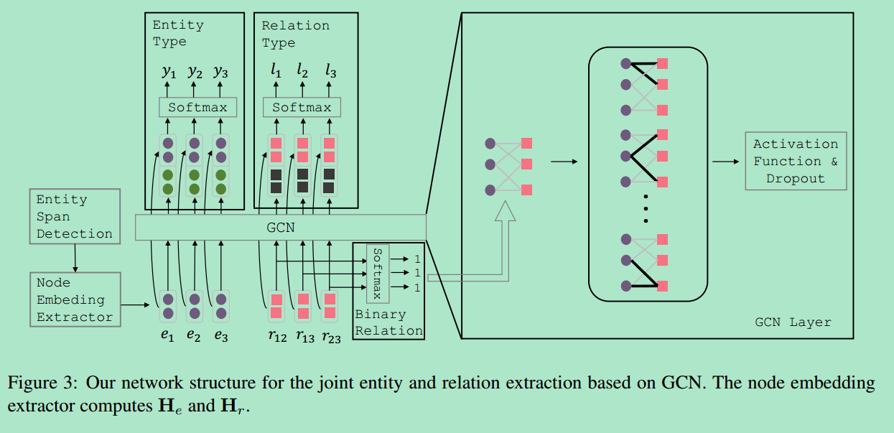

Joint Type Inference on Entities and Relations via Graph Convolutional Networks
https://www.aclweb.org/anthology/P19-1131/Changzhi Sun, Yan Zhang, Yuanbin Wu, et al. 发表于 ACL 2019
摘要
问题：任务联合实体关系抽取（joint entity relation extraction）
方法：作者首先标识实体span，之后在实体和关系类型上进行联合推理（joint inference），该部分使用了新的图卷积网络（GCN）对实体-关系二分（二偶）图（Entity-Relation bipartite graph）进行操作 作者引入了二元关系分类任务（binary relation classification，用来决定两个实体之间是否形成有效的关系，即valid relation）的输出作为图神经网络的输入，这样可以使邻接矩阵更加具有可解释性
结果：该模型在ACE05数据集上进行实验，结果显示在实体性能上超越现有的联合模型，在关系性能上能和现有的SOTA模型竞争
算法
作者发现：现有的方法能够正确识别出实体span（90% F1），但实体标签却容易出错（83% F1）；同时他们发现联合推理实体和关系类型比单独推理各自类型要效果好（例如PER-SOC关系可以一定程度上推理出PER实体）。 因此作者提出了如下模型： 作者首先给出定义，把句子s=W1,...,Ws抽取成大集合E和R，集合中e为实体e1和实体类型标签y1，如person（PER），r为（e1,y1,e2,y2,l），l为关系类型标签。
Entity Span Detection：作者采用了BILOU序列标注方案，即Begin、Inside、Last、Outside以及U（single word span），使用BiLSTM得到前后向拼接的向量，之后使用Softmax函数进行分类：
Entity-Relation Bipartite Graph：作者构建图时没有直接将实体节点连接而是通过一个关系节点进行连接，作者认为：a)不是所有的实体节点是有用的，关系节点起到了桥梁的作用 b)GCN并不适合与全连接图，对于一个实体节点，观察其参与的节点的唯一的方法是通过关系节点：
个人认为：这里的关系节点起到了门（gate）的作用，用来控制实体节点的访问，可以有选择地将有用的实体节点加入网络运算，节约计算资源
这里作者引入了一个二元关系模型{0,1}来预测两个实体之间的关系，其中若概率大于0.5则取1，否则取0，对角线为1（作者称之为hard binary value，之后还采用了soft value进行实验，即直接使用概率而不是1和0）：
Entity and Relation Nodes Embedding：
实体节点嵌入：将BiLSTM分类模型对应的隐藏层权重输入CNN+MLP得到关系节点嵌入：由两个实体节点嵌入+两个实体中间单词向量+两个实体span组的前后单词向量
Joint Type Inference：如架构图所示，将对应节点的Embedding输入到L层的GCN里，得到的结果Z和原始的H拼接得到F，然后输入带有Softmax的全连接网络。其中GCN运算为：
最终的计算公式为：
实验
数据集：ACE05，包含了7个实体类型和6个关系类型，具体的分为351个训练集、80个验证集以及80个测试集，评价指标是P、R以及F1。 下图为本文提出的方法与现有方法的比较（由于本文实验部分与博主的研究方向不同，故对实验结果不做评价与分析）：
博主认为：本文的亮点在于作者使用了二元关系节点{0,1}来决定实体节点的连接与否，起到了gate的作用，可以为将来构建关系图提供参考，其余部分与通用的结构类似